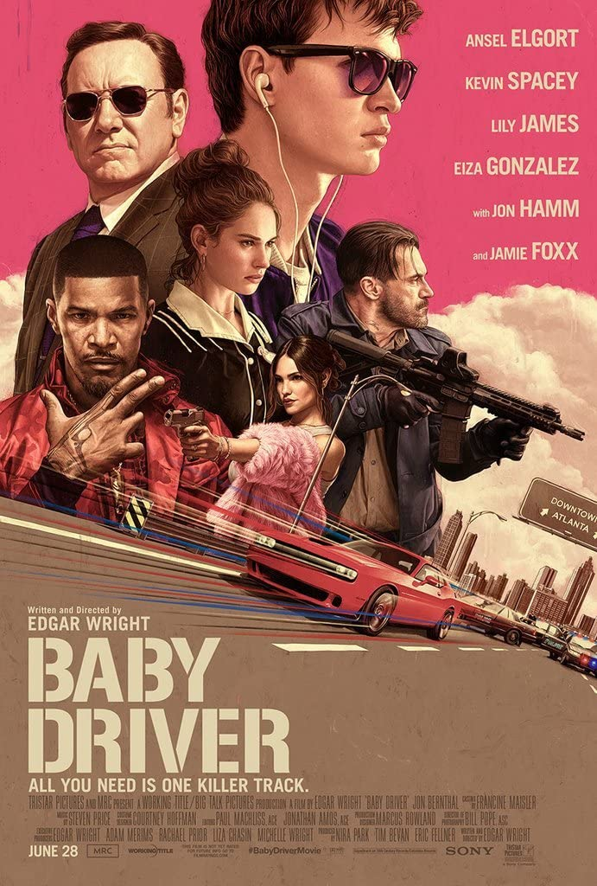

뮤지컬
; 음악ㆍ노래ㆍ무용을 결합한 것으로, 뮤지컬 코미디나 뮤지컬 플레이를 종합하고, 그 위에 레뷔(revue)ㆍ쇼(show)ㆍ스펙터클(spectacle) 따위의 요소를 가미하여, 큰 무대에서 상연하는 종합 무대 예술.갓 헬프 더 걸 (God Help the Girl, 2014)
- 개봉일 : 2015.02.12
- 감독 : 스튜어트 머독
- 각본 : 스튜어트 머
- 출연 : 에밀리 브라우닝, 올리 알렉산더, 한나 머레이, 코라 비셋, 피에르 보랭거, 크리스토퍼 맥칸, 마일즈 버맨
- 줄거리 : 위태로운 방황의 시기를 겪던 소녀 '이브'는 우연히 새로운 친구들을 만나 우정과 사랑을 나눈다. 그 시간들을 통해 자신이 정말 원하고, 잘하는 것이 음악이라는 것을 깨닫게 된 이브. 하지만 어느 날 뜻밖의 위기가 찾아온다.
나의 감상평 : 영화의 주인공인 이브는 정신적인 문제로 인한 거식증을 앓고 있다. 그녀는 기분이 자주 오르락 내리락하며, 또 자주 멍해지곤 한다.
이 영화에 나오는 노래들은 모두 그녀의 기분과 닮았다. 방방 뛰듯이 신남, 한 없이 밑으로 꺼지는 듯한 우울함, 잔잔하며 조용함 등 모두 그녀의 기분을 노래로 그대로 바꾼 듯하다. 노래의 분위기는 모두 다르지만 한 가지 공통점이 있다면 아기자기하며 사랑스럽다는 것이다. 그녀, 그녀의 친구들, 영화의 전체적인 색감과 장면들은 모든게 사랑스러우며 약간은 슬픈 느낌이 든다.
베이비 드라이버 (Baby Driver, 2017)

- 개봉일 : 2017.09.13
- 감독 : 에드가 라이트
- 각본 : 에드가 라이트
- 출연 : 안셀 엘고트, 케빈 스페이시, 릴리 제임스, 에이사 곤살레스, 존 햄, 제이미 폭스, CJ 존스, 존 번탈, 플리, 래니 준, 클레이 도나휴 폰테넛
- 줄거리 : 귀신 같은 운전 실력, 완벽한 플레이리스트를 갖춘 탈출 전문 드라이버 베이비. 어린 시절 사고로 청력에 이상이 생긴 그에게 음악은 필수다. 그러던 어느 날, 운명 같은 그녀 데보라를 만나게 되면서 베이비는 새로운 인생으로의 탈출을 꿈꾸게 된다.
나의 감상평 : 사실 이 영화는 음악 영화라기 보다는 범죄, 액션 영화에 가깝다. 하지만 장면에 딱 맞는 음악을 삽입한 기가 막힌 감독의 센스 덕분에 이 영화를 음악 카테코리에 넣었다.
이 영화를 다 보고 난 후에는 끝내주는 액션, 그리고 더 끝내주는 음악을 빠르게 질주하는 차 안에서 즐긴듯한 느낌이 들 것이다.